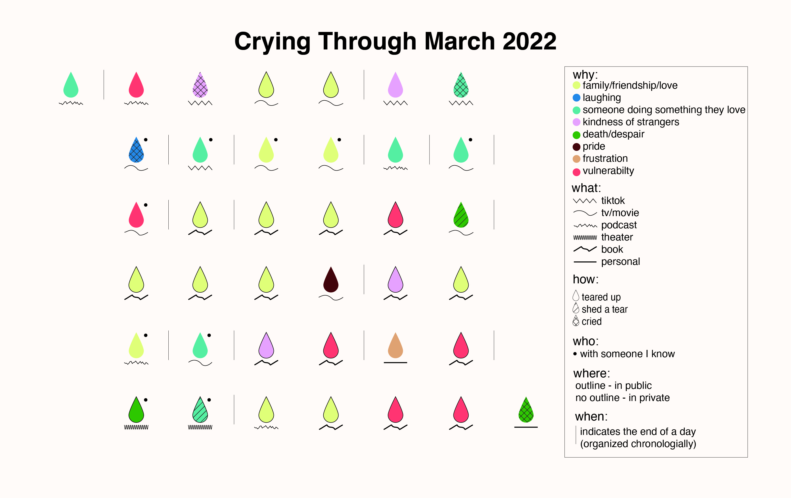

Crying Through March 2022
I have always thought of myself as someone who doesn’t cry very often. So I decided to start paying attention to when I do find myself crying. With this data I can see how often I’m crying, where I’m crying and why I’m crying.
For crying in this context I’m measuring three different types: teared up, shed a tear and cried. Every time I found myself doing one of these I recorded the date, time, location, what I was doing (e.g. watching tv), who I was with, and the reason that thing made me cry. For “reasons that thing made me cry” I’ve organized my crying into categories such as: family/friends/love, someone doing something they love, kindness of strangers, pride, death/despair, vulnerability, frustration and laughing.
In visualizing this data I am able to learn more about myself and my crying habits (can they be called habits?). Why do I cry? Do I cry more watching TV or reading books? Where am I crying? The biggest questions of all are – Have I been lying to myself? Am I really a cryer?

In this visualization (an ode to Dear Data) I’ve encoded as much data as possible while still keeping it interesting and not too overwhelming for the viewer. I’ve represented each crying instance with a teardrop, organized chronologically, with a line between teardrops to indicate a new day. Each teardrop’s color, outline/lack of outline, bottom line, fill pattern and dot/no dot represent a unique piece of data.
Counting the different teardrops, I can see that I cried 38 times in March (since starting to record the data from March 8th onwards). Most of these instances were due to some kind of media I consumed (only crying twice for personal reasons), and more often than not because of some family/friends/love relationship representation. This visualization tells an overall story of my crying in March, making it easy to see why I cried and how many times because of what media or reason. But, I chose to leave out some information to make it aesthetically appealing and easy to read.
Out of 38 crying instances in March 2022, I only cried twice for personal reasons. Which means I was mostly crying at some form of media I consumed – tv/movies, podcasts, a book, and when I saw Hamilton one Wednesday afternoon.
This stacked bar graph shows exactly what media I was consuming that made me cry. It is very clear that I mostly cried due to one book, Between Two Kingdoms, which makes perfect sense – as it’s a memoir about a young woman battling leukemia. Beyond this one book, I cried at TV/Movies a lot, but pretty evenly across the different ones, crying a bit more at Pieces of Her and Lego Masters (perhaps because I watched a lot more hours of these shows than any other represented here). It is interesting to see what specific piece of media made me cry, but I can’t say that books always make me cry more than podcasts or theater – because during March I read one very emotional book and I don’t spend as much time listening to podcasts or going to Broadway shows as I do reading.
For this visualization I chose to show the places I cried with a packed bubble chart, to emphasize the volume of crying I did on the MTA in comparison to all other places. Clearly I feel very comfortable crying on the subway, as it is the place I cried the most, 5 more times than I cried at home.
Again, I can’t come to a larger conclusion that I always cry on the MTA more than home – because I only read on the subway, and this month I was reading a very emotional book. There’s not a ton of information in this chart, but I think the size of the bubbles along with the tooltip help to drive home the story of where I’m crying.
The main focus of this stacked bar graph is to see what days of the week I’m crying. Spoiler Alert: I cry everyday of the week! I’ve also decided to show, with color, what type of crying is done on these days, to see if there’s any relationship – not only how often I cry on each weekday – but if I’m tearing up more than crying on any given day of the week.
Here it is shown that I cry a lot more on Wednesdays than any other day of the week, and I am hardly ever crying on Saturdays. It seems as though at the end of the week, Wednesday through Friday, I am not only tearing up a lot but I’m also shedding a tear here and there, and doing some real crying.
What I Learned
What did a month of crying actually look like?
Why do I cry? Do I cry more watching TV or reading books? Where am I crying? The biggest questions of all are – Have I been lying to myself? Am I really a cryer?
In recording all the times I found myself tearing up, shedding a single tear and crying – I’ve come to realize I am really a cryer. In the month of March 2022 I cried 38 times. I mostly cried from reading a very emotional book, and from watching TV shows and movies. And I cry a lot about family/friends/love relationships.
All of this has taught me that I am an extremely empathetic cryer. For example, the representation of love between friends in a TV show will evoke the same feeling within me, prompting me to tear up at the beauty of friendship.
Although, I do now think I am really a cryer, I’m not that big on crying for personal reasons. Perhaps that’s only because in March 2022 nothing really happened in my personal life. I didn’t have to tell my brother I had cancer (Between Two Kingdoms), I didn’t have to scatter my dad’s ashes (Single Drunk Female), I didn’t time travel to visit my younger self (The Adam Project), and I definitely didn’t help people experiencing homelessness (TikTok).